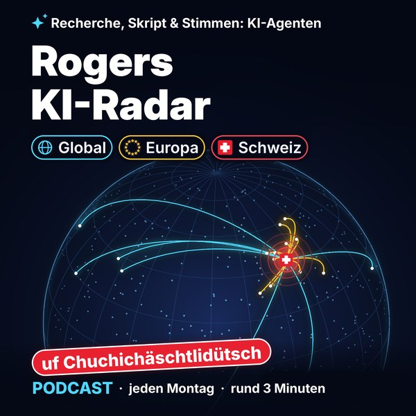

Rogers KI-Radar
Die wichtigsten KI-News der Woche – Global, Europa, Schweiz – in rund drei Minuten, auf Berndeutsch. Kostenlos: Hör auf Spotify rein oder abonniere den Podcast direkt über seinen RSS-Feed in jeder anderen Podcast-App.
Auf Spotify hörenhttps://roger-infanger-weibel.github.io/ghostwriter.ai/podcast/feed.xml
Kopieren klappt nicht? Adresse antippen und gedrückt halten, um sie zu markieren.
Abonnieren
Wähle dein Gerät. Das Prinzip ist überall gleich: Such in deiner App die Funktion «Podcast per URL hinzufügen» und füge die Feed-Adresse ein.
iPhone und iPad – Apple Podcasts vorinstalliert
- Kopiere oben die Feed-Adresse.
- Öffne die App Podcasts und tippe unten auf Mediathek.
- Tippe oben rechts auf «…» und wähle «Sendung per URL folgen…».
- Füge die Adresse ein und tippe auf Folgen.
Mac – Apple Podcasts
- Öffne die App Podcasts.
- Wähle in der Menüleiste Ablage → «Sendung per URL folgen…».
- Füge die Adresse ein und bestätige.
Alternativen
Overcast und Pocket Casts nehmen ebenfalls eigene Feeds an: Füge die URL jeweils über das + bzw. die Suche ein.
AntennaPod gratis, Open Source
- Installiere AntennaPod aus dem Play Store oder von F-Droid.
- Tippe auf Podcast hinzufügen und wähle «Podcast über RSS-Adresse hinzufügen».
- Füge die Feed-Adresse ein, tippe auf Bestätigen und danach auf Abonnieren.
YouTube Music
- Öffne die Bibliothek und wähle oben den Filter Podcasts.
- Tippe unten rechts auf Podcast hinzufügen.
- Wähle «Podcast per RSS-Feed hinzufügen», bestätige den Hinweis, füge die Adresse ein und tippe auf Hinzufügen.
Pocket Casts, Podcast Addict
Bei beiden kannst du die URL direkt ins Suchfeld einfügen bzw. unter «Podcast hinzufügen → RSS-Feed».
Pocket Casts (Desktop-App oder Web)
- Installiere Pocket Casts oder öffne es im Browser und melde dich an.
- Füge die Feed-Adresse ins Suchfeld ein.
- Öffne den gefundenen Podcast und klicke auf Abonnieren.
gPodder gratis, Open Source
- Lade gPodder von gpodder.github.io herunter und installiere es.
- Wähle im Menü Abonnements → «Podcast über URL hinzufügen».
- Füge die Adresse ein und klicke auf Hinzufügen.
Windows hat keine eingebaute Podcast-App. Willst du nichts installieren, nimm den Weg im Tab «Web».
gPodder in den meisten Distributionen
- Installiere es, z. B. mit
sudo apt install gpodderoder via Flathub. - Wähle im Menü Abonnements → «Podcast über URL hinzufügen».
- Füge die Adresse ein und klicke auf Hinzufügen.
Kasts (KDE) oder Rhythmbox (GNOME)
Kasts: Wähle Discover → «Podcast hinzufügen» und füge die URL ein. Rhythmbox: Öffne den Bereich Podcasts und wähle «Neuen Podcast-Feed hinzufügen».
Kommandozeile
Arbeitest du gern im Terminal? Nimm newsboat mit podboat und trag die Feed-URL in ~/.newsboat/urls ein.
YouTube Music im Browser
- Öffne music.youtube.com/library/podcasts und melde dich an.
- Wähle + Podcast hinzufügen → «RSS-Feed hinzufügen».
- Füge die Adresse ein. Der Podcast erscheint danach auch in der App auf deinem Handy – auch auf dem iPhone.
Pocket Casts Web
Öffne play.pocketcasts.com, füge die Feed-Adresse ins Suchfeld ein und abonniere. Die Web-Version synchronisiert mit der Handy-App.
Ganz ohne App
Du willst nur die neuste Folge hören? Öffne den Feed und klick auf den MP3-Link der obersten Episode. Shownotes und Quellen findest du in meinem GitHub-Repository.
So funktioniert’s
Technisch ist ein Podcast nichts anderes als eine öffentliche Liste (der RSS-Feed) mit Links auf MP3-Dateien. Deine App schaut regelmässig in diese Liste und lädt neue Folgen selbständig herunter. Dazwischen steht keine Plattform – nur eine Datei auf GitHub.
- Montag, 06:00 – RechercheMeine automatisierte Claude-Routine sammelt die KI-News der Vorwoche aus kuratierten Quellen und schreibt den Wochenrückblick.
- SkriptDaraus entsteht ein kurzer Dialog mit den Highlights: Global, Europa, Schweiz – je Region höchstens eine Minute.
- StimmenGemini TTS spricht das Skript mit zwei synthetischen Stimmen, Lena und Marc. Das Ergebnis ist eine MP3-Datei.
- VeröffentlichungMP3 und aktualisierter Feed landen in meinem GitHub-Repository; GitHub Pages stellt sie öffentlich bereit.
- Deine AppSie bemerkt den neuen Eintrag im Feed und lädt die Folge herunter – meist innerhalb weniger Stunden, je nach App.
Fragen
- Wann kommt eine neue Folge?
- Jeden Montagmorgen, mit den News der Kalenderwoche davor.
- Was kostet dich das?
- Nichts. Du brauchst kein Konto, es gibt keine Werbung und kein Tracking durch einen Podcast-Hoster.
- Wer sieht, dass du zuhörst?
- Beim Herunterladen sieht GitHub als Hoster wie bei jeder Website deine IP-Adresse. Ich selbst erhalte keine Statistiken über Hörerinnen und Hörer.
- Die neue Folge erscheint nicht?
- Zieh in der App die Episodenliste nach unten oder wähle «Aktualisieren». Manche Apps prüfen eigene Feeds nur alle paar Stunden.
- Wie beendest du das Abo?
- Öffne in der App den Podcast und wähle «Nicht mehr folgen» bzw. «Abo beenden». Mehr ist nicht nötig.
Dein Feedback
Der Podcast ist ein persönliches Experiment, und ich freue mich über jede Rückmeldung: Was ist dir zu lang oder zu kurz, welche Themen fehlen, wie wirken die Stimmen auf dich, und hat das Abonnieren auf deinem Gerät geklappt?
Schreib mir am einfachsten eine Nachricht auf LinkedIn – oder sag es mir direkt, wenn wir uns sehen.